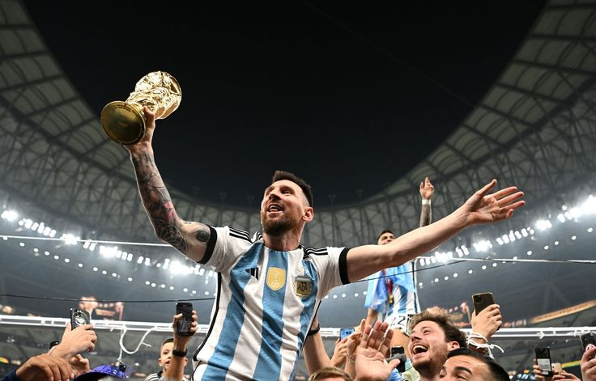

Lionel Messi
Inter Miami


Niečo o ňom
- Celým menom Lionel Andrés Messi Cuccittini má 36 rokov narodil sa v Rosáriu v Argentíne.
- Je to svetoznámy futbalista ktorý aktuálne hrá za tým Inter Miami.
- Messiho prezívajú GOAT(Great of all the time) inak povedané najlepší hrač všetkých čias.
- Jeho najväčší rival je Cristiano Ronaldo ktorému tiež často býva priraďovaná prezívka GOAT.
- Lionel Messi aktuálne vlastní 7 zlátých lôpt(Ballon d'Or), nedávno z Argentínou získal trofej majstra sveta.
Kariéra
- Newell's Old Boys do FC Barcelona (2000)
- FC Barcelona (2003 - 2021)
- FC Barcelona do Paris Saint-Germain (PSG) (2021)
- Paris Saint-Germain (2021 - 2023)
- Paris Saint-Germain do Inter Miami (2023)
- Inter Miami (Súčasnosť)
Pre viac informácií o Lionelovi Messim, kliknite sem.
Pre zobrazenie oficiálnej stránky tímu Inter Miami, kliknite sem.